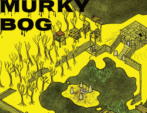

Published Content - Highlights
Of the things I've written, people seem to by far most like Procedures to Discover the Path Ahead.
 Map creation and worldbuilding tool - Physical copies available
Map creation and worldbuilding tool - Physical copies available
 Adventure -1-shot - Mork Borg - Physical copies available
 Adventure - system-agnostic - 1-shot - no combat
Adventure - system-agnostic - 1-shot - no combat
Work In Progress
 Should be in a playable state. Free. For Knights of the Road, an ItO-like.
Should be in a playable state. Free. For Knights of the Road, an ItO-like.
 May not actually be playable. Extremely in progress. Has been in progress for years. A possibly overly ambitious concept for a solo adventure.
May not actually be playable. Extremely in progress. Has been in progress for years. A possibly overly ambitious concept for a solo adventure.
Other Published Stuff
This stuff is more weird or otherwise for a more niche audience, or for systems I'm no longer that interested in.
 Adventure -1-shot
Adventure -1-shot
 Modern fantasy artifact - Physical copies available
Modern fantasy artifact - Physical copies available
 Adventure - 5e/13th age - 1-shot - Létatujé setting
Adventure - 5e/13th age - 1-shot - Létatujé setting
 Adventure - 5e/13th age - 1-shot
Adventure - 5e/13th age - 1-shot
 Crafting system - Under Hill, By Water
Crafting system - Under Hill, By Water